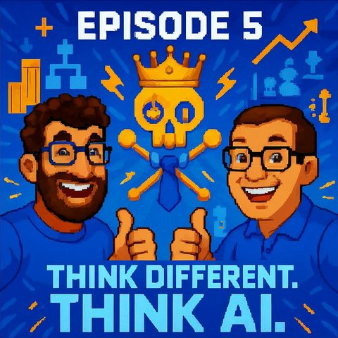

Boss-Level KI
Auf Deutsch lesenTopics Führung und Arbeit
Guest Dr. René Deist
What it is about
Leadership in the AI Age
In this episode, we dive deep into the boss level of artificial intelligence. Together with our first guest René Deist, we discuss how AI not only automates tasks but could also act as a team member and even as a boss in companies. We openly talk about fears, opportunities, and the speed at which our work environment is changing, also focusing on the societal and human aspects.
We reflect on how AI is already influencing our lives in the background, why prompt engineering is more important than ever, and how organizations can strategically prepare for the future. With anecdotes, practical examples, and a wink, we question how we as humans can thrive in a world where machines are taking on more and more responsibility. A must for all who want to rethink work, AI, and the future.
Star Wars
https://de.wikipedia.org/wiki/Star_Wars
Star Trek
https://de.wikipedia.org/wiki/Star_Trek
Toy Story
https://de.wikipedia.org/wiki/Toy_Story
Douglas Adams – The Hitchhiker's Guide to the Galaxy
https://de.wikipedia.org/wiki/PerAnhalterdurchdieGalaxis
ChatGPT
https://openai.com/chatgpt
GPT-4
https://openai.com/research/gpt-4
GPT-5
https://openai.com/research
Wolf of Wall Street
https://de.wikipedia.org/wiki/TheWolfofWallStreet
Prompt Engineering
https://de.wikipedia.org/wiki/Prompt_Engineering
Agentic AI / Agent Systems
https://de.wikipedia.org/wiki/Intelligenter_Agent
McKinsey Study on AI in Companies
https://www.mckinsey.com/de/news/presse/2023/kuenstliche-intelligenz-in-unternehmen
Book: The Unemployment of Workers
https://www.amazon.de/Arbeiterlosigkeit-Die-Zukunft-Arbeit-Deutschland/dp/3864709046
Neuromancer
https://de.wikipedia.org/wiki/Neuromancer
Her (Film)
https://de.wikipedia.org/wiki/Her_(Film)
OpenAI
https://openai.com/
Amazon
https://www.amazon.de/
Walmart
https://www.walmart.com/
Peloton
https://www.onepeloton.de/
Andrew Ng
https://de.wikipedia.org/wiki/Andrew_Ng
Transcript
00:00:00Welcome to Think Different, Think AI, the podcast by Mark and Jens.
00:00:07Two technology-loving minds who not only talk about artificial intelligence but live it.
00:00:14Here, you will find clear classifications, real practical insights, and a fresh perspective on what is possible.
00:00:20Understandable, critical, and always with a wink.
00:00:24Thought-provoking, amusing, and above all, for discussion.
00:00:29After our last conversation about Star Wars and Toy Wars, today we have
00:00:39a topic that I find no less exciting. Today, we even have a
00:00:45little surprise, a small premiere, which we will get to later. The podcast episode
00:00:50today is themed BOSSLEZZLKI. Jens, you are also with us again today, I
00:00:58I wanted to ask you first, do we have any fuzz? Fuzz, yes this time we're doing
00:01:03another fuzz check and I can proudly state that last time, as far as I
00:01:08know, we didn't say anything wrong, so we don't have to go back over anything from the last episode.
00:01:11If any of our 1000 viewers found something,
00:01:16feel free to let us know, comment on it. We'll fuzz over it another time, but what I would like to briefly
00:01:21touch on, Mark, when you mentioned the Star Wars episode. It was well received by the
00:01:27people and there were discussions about whether Star Wars or Star Trek is actually the
00:01:34cooler AI role model for the future that we want to look into. Accordingly, we will definitely do a
00:01:39Star Wars versus Star Trek episode again. We'll do that, definitely.
00:01:44That's already planned. I'm an old Trekkie. You know, that's my problem.
00:01:48I actually enjoy both. That's my problem. Therefore, I sometimes don't understand
00:01:54the bickering, because there were indeed two different approaches to tackling those topics.
00:01:58And, another thing we will definitely do, because that also resonated, is the topic
00:02:05we have to continue Toy Story Toy Wars. And what could be more fitting than the upcoming
00:02:11Christmas celebration, that's coming up, where we say we’ll take a look in the cupboards
00:02:14and shelves of the latest robot providers and other AI suppliers for children's rooms and
00:02:20we will surely do a nice Toy Wars under the Christmas tree episode or something like that.
00:02:25So that's already on my mind, so much for that. So no fuzz, but rather let's say
00:02:29the, let's say the red lines we threw out last time, topics,
00:02:34that we'll carry forward.
00:02:35Yes, nice. I've already said it, we have a little premiere today
00:02:41Because we are for the first time in the podcast.
00:02:45I have to disappoint you, we don't have 1,000 listeners yet.
00:02:47But we will definitely manage that.
00:02:49Today we have a guest with us whom we are pleased to welcome.
00:02:53Are we totally proud of that?
00:02:55We actually have René Deist with us today in the talk and maybe
00:03:01first of all, René, great to have you here.
00:03:03Would you like to say a few words about yourself?
00:03:07Yes, first of all, thank you very much for the invitation.
00:03:09It’s really cool to be here with you. Yes, you said I shouldn't introduce myself. I think I'll just say
00:03:15the simplest thing: I am a nerd. I've devoted my life to bits and bytes
00:03:23and have variously worked in different IT roles, but primarily as a CIO and CDO for
00:03:30various large multinational corporations. I’ve had the chance to live in Shanghai, live in Paris,
00:03:36live in San Francisco and also in Germany, where I still live now. And I work
00:03:42most happily with people and secondarily with machines.
00:03:45When you lead in with being a nerd, it’s not usually the case for every nerd
00:03:52like that, right? From that perspective, it’s great to have you here today. Jens, what is our
00:03:58first topic today that we want to discuss?
00:04:01We three see each other, but our listeners do not, accordingly, since you’ve already outed yourselves a bit as nerds,
00:04:10I’ll briefly turn to Freiran, not Star Wars or Star Wars works with René too, right?
00:04:17Yes, both Star Wars and Star Trek are great, both are awesome, and of course, Hitchhiker's Guide to the Galaxy is also a must.
00:04:26Definitely, definitely, yes, grand book, and the movie wasn’t so bad either, right?
00:04:32You know, adaptations can sometimes be a bit weird.
00:04:36With that book, there was a concern that it could turn out very, very weird and bad.
00:04:40I think it turned out quite well, actually.
00:04:42Yes, our first topic block.
00:04:46Today we wanted to talk a bit, you mentioned before about the topic
00:04:51kibos level, so what if the AI maybe leads us, if the AI
00:04:57perhaps collaborates with us, that’s the topic of our show today where we want to
00:05:01discuss a bit with you, René, from your perspective as well, so let’s clarify that
00:05:05I think we need to open this a bit more for our audience so that we
00:05:09can say how this collaboration between humans works; is it a
00:05:14symbiosis or is it more parasitic? How can we actually imagine that when
00:05:20we talk about how AIs might, for me, one episode,
00:05:24how AIs might be our team members or maybe even our boss someday.
00:05:27What is your thought on that?
00:05:29Well, I do think that for all those dreaming that AI will simply take the unpleasant tasks off our hands,
00:05:35that someday the household robot will come in with AI, that will finally wash the dishes and I won't have to wash them myself.
00:05:42That's what we dream about.
00:05:43The reality, however, is likely the opposite.
00:05:45I always call it bringing the solutions into the engine room of life.
00:05:50Yes, so creating solutions for us in the background.
00:05:53And seriously, that's been around for quite a while.
00:05:55I mean, we are right here, a great software,
00:05:58and the sound is transmitted clearly and crisp,
00:06:01so that all listeners can hear the great things.
00:06:03And why the sound is so clear and Christ-like, well, there’s AI in it.
00:06:07The AI knows that now my voice is being amplified,
00:06:11but the dog barking in the background is being suppressed.
00:06:14What does the AI know? Or when you look at a website, when it's an Alperigen website,
00:06:19you don’t even think that it was originally written in Kizuayeni,
00:06:23but you close it in German. That was also the AI that in the engine room of life
00:06:27has long been taking on tasks for us. And now, let’s dive into what we will soon
00:06:32check out that is new. Now the AI is getting closer and closer to
00:06:37the tasks that make us desperate. So creating an Excel file, in Pivo, why
00:06:44is there a critical point with this cost development in this project and what is the problem there?
00:06:50So, it’s getting a bit closer. And that will mean that it actually
00:06:54not only does it simply wash the dishes for us, but it also completes tasks more efficiently
00:07:00which we can also do well today. So, it will rather be something like this. At the beginning, I am
00:07:06I am convinced that there will be App-to-reaction from many people, but afterwards it will be something symbiotic.
00:07:13What do you mean, what do I mean?
00:07:15And then we will have a situation in a few years where we say, on the one hand I have deep experience in topic X,
00:07:22and then I have deep anonymity through agent options.
00:07:25And I will compare them.
00:07:27And then I will take a look at what helps me now.
00:07:31I mean, this thing about scaring, Triligence. But that is,
00:07:36depending on whom you meet, in what context you meet the people, how they
00:07:40engage with the topics, they either feel partially, let's say
00:07:44completely on the fringe, because there
00:07:48A thousand things are happening, they are not dealing with it, they might catch it
00:07:51maybe because the news reported something. Others
00:07:54are now dealing with this stuff every day. So what’s really happening? One has to
00:07:59honestly admit, the pace is quite significant with new tools,
00:08:06new promises, new possibilities, no idea what comes through the air, where you then
00:08:13even ask yourself, how can you keep up with that? And it doesn’t feel like I
00:08:18can just say, okay, this is now just a straight line and now there’s just no
00:08:22idea, summer break and accordingly a lot or little comes, but this is really,
00:08:26it’s continuously gaining more ground. From that perspective, one can understand,
00:08:31if people feel completely overwhelmed or scared.
00:08:38I think that’s something one must not forget, just because one is dealing with it, that
00:08:42it can certainly affect other people differently. And the technology, the three of us, we are
00:08:48of course deep into the subject. But it’s quite clear, it hurts. Just like when you
00:08:54have to explain it. Oh God, you have to take it all in again.
00:08:58You know that it hurts me?
00:09:00Yes, I know that.
00:09:01But it is so, it’s simply effort, one has to deal with...
00:09:06And it’s the same with the various ChatGPT or various LLM applications,
00:09:12which we use casually, that others are just slowly crawling up to.
00:09:16And that hurts. And it’s a real effort for people.
00:09:19And now we come and say, and they take it too,
00:09:22and so forth and the word for fears and worries and this is the unknown, unknown
00:09:29Monster.
00:09:30So if you don't know what's under your bed, then you have a lot of fear when
00:09:33you've looked in the dark, then you have a little less fear, at least for a minute.
00:09:37Hopefully, you have less fear depending on what's underneath, but Jens maybe
00:09:42just briefly, because I just remembered about courage, when you use it,
00:09:45I have a story, I don't know if I've told this in the group before, my
00:09:49mother.
00:09:50Um, we don't talk about age with women, but I'll put it this way, she has already got a few years under her belt and in her town has always been kind of special, because back when the Apple Watch came out, she was the first to pay with Apple Pay, and the people at the checkout looked at her like, what are you doing?
00:10:06And recently she actually had the topic that she urgently needed to go to Mallorca.
00:10:10And then Manus here, okay, how do you get to the airport? Never, you know, flown in her life, according to, right?
00:10:17how do I get to the airport, what do I have to do, which flight am I taking and then she talked about
00:10:21Let Manus plan the thing, because I once wrote a senior's guide to AI
00:10:27and the motto is just try it out, and then you find yourself thinking,
00:10:30people simply have to experience, in quotation marks, what it can do.
00:10:35Of course, that has two sides; otherwise she might have gone to the travel agency
00:10:39or I don’t know, she didn’t do that now, but Jens, you wanted to
00:10:43maybe say something else, because we are completely talking to ourselves now.
00:10:47We’re fine, all good. I was just thinking, there are two things, I believe, that are currently interesting.
00:10:53René brought up the example of the translation of a website, which is happening in the background for him,
00:10:58or the various things that are failing in the background for him.
00:11:00From my perspective, those are topics where I say, this is highly logical from a usability perspective
00:11:07and good that these things are working.
00:11:10But if we now consider this from a job perspective, then it’s always something where I say, of course let's keep it simple now.
00:11:16It may no longer be the best idea to open the translation agency when you break it down a bit like that.
00:11:22But even more dramatic is possibly the change we are currently experiencing, that it will be even less visible than the examples you just provided.
00:11:35because they've continued, I think that doesn't really affect many now
00:11:40people, we don't need people right now, maybe it was a good idea earlier that
00:11:43then dogs would have been taken out so that they wouldn't be in the moment there
00:11:46rumbling or something but I think we will have many areas now
00:11:50where it suddenly becomes clear because some companies are leading the way because
00:11:56some people are going into these areas and we haven't succeeded
00:12:00everyone really needs to be picked up at that moment so that they understand that there's no
00:12:03monster underneath it and that they don't engage with it soon enough, many will then
00:12:06be fully confronted with the facts where suddenly the software solution is so advanced
00:12:11are and the usability for me as a person or as a company is actually in the
00:12:17fulfillment of a certain task done so well by AI that this transition
00:12:22will be very dramatic for many people out there, for society, for political decisions.
00:12:29We are making the topic of regulation, is that even keeping up at the moment?
00:12:33So I believe the speed of change is currently dramatically high.
00:12:37Yes.
00:12:38And that is, if you look back to the 80s and 90s, back then the first
00:12:44robots came into the production facilities.
00:12:46That is also an automation of manual labor.
00:12:49So the people who worked on the assembly line have actually only taken three steps
00:12:54back, now controlling a robot that then processes the assembly line.
00:12:58But these three steps back, I have the 80s, 90s, took about 15 to 20 years
00:13:03and were totally exhausting, because of demonstrations, masses, layoffs, whole
00:13:12here, I come from the Grohgebiet, so entire municipalities went bankrupt virtually overnight
00:13:17and had to find themselves anew, new business models, so a very long
00:13:21process.
00:13:22And indeed, all of this now with the speed of innovation, the speed of technology,
00:13:27what is happening right now. We have the chance to get back into the same situation because what used to be blue-collar work is today white-collar work, and these automatons, the agency, the automation, they are doing exactly the same thing: automating tasks that were once done manually.
00:13:44Now we have, we in Germany and also we in the company, we have it super
00:13:49Castle.
00:13:50On one hand, we have learned from what has happened, and we are already in a demographic.
00:13:55Change.
00:13:56That's more of a problem for the world.
00:13:59And then I'll tell us about a book, the unemployment, it's a fantastic
00:14:06book, really well written by the CEO of, I don't know, that still needs to
00:14:13be researched, but unemployment, it first describes the
00:14:17demographic change, it really is based on how many people were working in
00:14:22industries and how this will dramatically decrease in the future.
00:14:26will be reduced in the industries employing the working population.
00:14:29It will automatically decrease. And indeed, the topic of AI has become our
00:14:34beacon of hope, not just a case of falling behind; it is indeed a
00:14:37solution. We may need to repeat this to alleviate some of the fears,
00:14:41to smoothen things out a bit. So without that, we probably won't make it any more,
00:14:45the journey through the stars. And now we have the chance to do this in
00:14:50to do it right. So to say, look, here comes an AI and you guys are doing
00:14:54tasks. That means we will now actively help people deal with it and other
00:15:01tasks. You can also say right away what that will be. I also have an idea of what that is
00:15:04capable of. That they have other tasks and that we take them along on such a noise ride,
00:15:09Because tomorrow it will be different, and the day after tomorrow even more different, and then again, so you know,
00:15:15it will be phoric. So it will change often and we have to recognize that, for us
00:15:21as people who work together, this is adaptable and has a higher significance, the training,
00:15:27gains a higher importance than it did years ago. So when I was a little kid, I thought,
00:15:35at 50, then you're done. You can’t learn anything anymore. You think, your office, you sit
00:15:42at the writing desk and you’re climbing the chair legs. And then you go until retirement and then you might do a bit of cycling.
00:15:49That's not the case anymore. At 50, you start learning a new language and you have something completely new planned.
00:15:54So this life is different and we absolutely need to highlight and present that, because it is
00:16:01our case, it will come and there will be a time where we not only, where we do not
00:16:06just work together, but there will also be AI bosses, supervisors, because they
00:16:13can distribute shifts much more sensibly than humans can, this will also
00:16:17happen.
00:16:18Yes, yes.
00:16:19I think we are already seeing that.
00:16:20I mean, I just read something earlier that I think at
00:16:23some, I’m losing track here, at a Walmart or Amazon warehouse, in principle they already,
00:16:28the AI looks at how it can assign shifts to optimize logistics in that warehouse
00:16:35And this is also a kind of negotiability, the perspective is upward representative.
00:16:38I understand that.
00:16:39That is a task we just described, with the Excel files or something else.
00:16:42It doesn't have to be done by a human, it can very well be done by an AI in
00:16:45this case.
00:16:46But the topic of this preparation that you mentioned, we are on our way.
00:16:51I mean, I believe, also at the beginning of this year there was a McKinsey study,
00:16:55that mentions that, I believe, 92 percent of companies want to increase their AI investments,
00:17:00but, I believe only one percent of companies see themselves or their colleagues
00:17:06and the entire company actually ready for it. And I believe that is also a good,
00:17:11you could also transfer that to the ambassadors themselves. I believe that is a topic,
00:17:14where I think there is also not solution A as you just described. You
00:17:18have to approach it or something like that. I believe that was also one of the reasons when the market
00:17:22and I, who started this podcast, because we keep noticing that
00:17:24this discourse helps initially, because I believe even what we are talking about today will probably
00:17:29have a different relevance in half a year, if we are lost. But
00:17:32it might have been important that at this moment today we are dealing with this
00:17:35knowledge that we have at this moment on this topic. And I believe,
00:17:37that is simply an essential thing that could be mega helpful, that could also be a
00:17:42kind of impulse out there that you now need to start engaging with it.
00:17:46Because I believe, in the complexity that this topic brings with it. You just said agency,
00:17:51we occasionally talk about that too, it will honestly be hell,
00:17:56to control and maintain all of that. No, it will be the opportunity, not the opportunity,
00:18:00not framing at this point. Yeah, yeah, sorry. But the change, since I've just
00:18:07been dealing with this, I asked an agenting research agent to find waves
00:18:15and trace the effects in the sources that AI generally has on the labor markets
00:18:21on the organization. And of course, as you can imagine,
00:18:24really good content came out, one, it actually surprised me, that's a
00:18:30fuck in the USA, I believe, that was the chain USA, there are now 35 percent fewer
00:18:35entry-level jobs posted compared to last year.
00:18:41There are of course many reasons. But one of the reasons is clearly AI. Why?
00:18:46Because exactly the agents, namely at the very first moment, those who opened up,
00:18:50the starters, those who are newly joining.
00:18:54Make me the consequences, read that, research that for me.
00:18:58Exactly.
00:18:59And now I will write down, so if we wouldn't counteract now,
00:19:03which we are doing, if we wouldn't, then in a few years, I, as a subject matter expert,
00:19:07would no longer be involved.
00:19:08How am I supposed to become a subject matter expert if I can't get started, but that's in
00:19:12a specific effect is already measurable now.
00:19:14As I said, there are many reasons, not just for AI as the only reason, but
00:19:18This is one of those that will lead to it.
00:19:21So you have to react.
00:19:22And that's the good thing.
00:19:23We react.
00:19:24We are considering what we will do in the future.
00:19:27And one thought is, of course, that when people come into the company in the future, whether new or
00:19:32more experienced, they will not be placed in a specific role, but I benefit,
00:19:38they will undertake a learning journey and after one or two years have a new role.
00:19:43But at the beginning, they will work here and there, never in one training session, sometimes here, sometimes there, sometimes there
00:19:47to participate in this wandering.
00:19:50And this is how, when the Varex becomes, what it will be like.
00:19:54I had, one doesn’t need to name names in this case, an acquaintance who
00:19:59developed another umbrella and there it is more like, where the opinion
00:20:04from above is lived or preached, then it goes again, this can
00:20:10harm us nothing.
00:20:12Where I then stand and say is new land colleagues, so let's say I can't give a prediction on how quickly or slowly the influence will be.
00:20:23But merely this perception of what happens when you show these people what is possible is not derogatory or mean when you show people what can be done.
00:20:32With the motto, how can you use this for yourself, what is made possible for you? We also had the topic before, your expertise becomes better because you are enabled to do more things, where you might previously lacked the skills, where you had no idea.
00:20:47So when you show people what is possible, what can I do, what have I tried,
00:20:51what was the result, and they start to think, wait a minute, how does this help me?
00:20:58Professionally, privately, in the family, I don’t know what, then that is very surprising.
00:21:02And by the way, just because you mentioned it earlier, as a task, yes, I will take on the task
00:21:07of course and link the book accordingly in the show notes.
00:21:11Please do not comment on this, your fun aside.
00:21:14From this perspective, I genuinely believe that many people have not yet heard the shot.
00:21:20Some people simply or like a hen try to keep people away from it,
00:21:25with the motto that happens, such an AX-Vision goes, to and through.
00:21:29But this disruption, which it means in the way we work, how we work with each other,
00:21:36what we work on, and what we might let work for us, is far too diverse.
00:21:41I mean, this doesn't stop with you, with me, with Jens, or, I don't know, what.
00:21:46My wife is a graphic designer and yoga teacher, yes, but well, I don't know about yoga instruction
00:21:51right away.
00:21:52But maybe that too, yes, there are plenty of salaries and districts.
00:21:56So it's so broad where we will be facing all this stuff.
00:22:00I believe this protective gap should definitely not be taken.
00:22:05No, definitely not.
00:22:06So I still remember, Daniela, when I was asked where I see use cases
00:22:10for generative AI, I say actually everywhere. So I can't choose any
00:22:18specific one. It's already in the board. It’s just a general AI solution,
00:22:25and we don't need to discuss the AGI topic or something like that, but it is
00:22:28just generally for me. So even though I naturally like your yoga examples, we have also
00:22:34seen it with various Pelotons or something else, of course. The mirror or the
00:22:38camera, which then captures a movement, will naturally be able to react much
00:22:42more individually at home with you, when you then, I can’t say it anymore,
00:22:46a customer, a moon cat, whatever those poses in yoga are called, then in principle
00:22:49you haven't done it correctly.
00:22:50What we can also do here, in this case, hardly anymore.
00:22:53I won’t say anything about that.
00:22:54My wife has received extensive training in that, it looks very good there, no comment
00:22:59at this point.
00:23:00I'm not really suited for that because I've realized that I can't
00:23:03win.
00:23:04I know I like to win in sports and yoga.
00:23:06I can relax super well.
00:23:07So this final position where you lie down, I fall asleep in 20 seconds,
00:23:11I'm really good at it.
00:23:12Exactly.
00:23:13Seeing yoga as a competitive sport, very nice.
00:23:15But I have a trick for your colleague, if he or she is listening, the boss
00:23:23or the boss ring, age is holding us back.
00:23:27If we are, let’s say, blessed in age and believe that we are in our 80s,
00:23:31or going into the twilight of life,
00:23:35then I don't care about the new anymore.
00:23:37The trick is to ask people,
00:23:40what do you think will be in 50 years, not in five years.
00:23:44And 50 years is based on our, at least, work experience,
00:23:47so that we actively work on it.
00:23:50And when people think about it,
00:23:52what will be after their, maybe also 100 years,
00:23:54so really what will happen when you are gone,
00:23:57different ideas come up.
00:23:58Yes, when people say, yes, then innovation and all that, because I’m no longer there myself.
00:24:03So, you can ask the people, okay, why is the discrepancy from these to each year so immense?
00:24:10Why should they already matter?
00:24:14Small tip.
00:24:15Yes, I'll take it with me, I'll forward the episode, I’ve already sent the other episodes,
00:24:21but then I will of course be very happy to forward this episode and to affected individuals
00:24:26At this point, greetings go out.
00:24:28If you have nothing to add to this topic, I would like to come at it from another angle.
00:24:35I mean, when you engage with the whole Aikram, you also experience that
00:24:42sometimes expectations are heightened, which perhaps are not yet completely
00:24:47fulfilled today.
00:24:49When I sometimes listen to what people are feeling,
00:24:54Is GPT-5 good now, or is GPT-5 bad now?
00:24:58Where I've heard in discussions that someone said,
00:25:01Sam Altman took his friend away because GPT-5 didn't respond as
00:25:07nicely and empathetically as the old model.
00:25:11I don't want to judge whether that’s good or bad.
00:25:13I mean, there are situations where you might be having a conversation with machines
00:25:18and honestly, if that helps someone,
00:25:22then that’s totally fine.
00:25:24On the other hand, there is of course also, I mean here, what was the movie with Leonardo DiCaprio, sell me this pen?
00:25:31Today the answer is, the pen has AI and whoosh, oh yes great, great pen, really awesome, right?
00:25:37They put AI on everything, even when perhaps in the background there is just normal IT, where absolutely nothing generative or anything else is happening,
00:25:47but you just wrote AI on it, that's another point.
00:25:51From that perspective, I'd like to shift the topic a bit to where we actually stand and
00:25:58Where do we believe it will actually go in the short term? So, what are we really going to experience in the short term?
00:26:06And when I'm in, the movie is The Wolf of Wall Street, you mean? Exactly, yes, exactly, yes.
00:26:10And I passed the tests.
00:26:13So now in the short term, if I address that, firstly GPT5 is indeed a,
00:26:18How do you know that? It's an innovation because it's model routing, because it’s no longer the one
00:26:23model. From the model routing, these different facets of answers emerge, and from that
00:26:28I can already imagine that people will say, my beloved habit is no longer there,
00:26:33the empathy is less, that empathic aspect was also not there, that will still
00:26:37be faked. But it's important to know. This and the other models are also
00:26:43also going along. The classic LLM, the pure token predictor, well, it has expanded,
00:26:49now it's the model router, which means it always has a piece of reasoning and always a piece
00:26:54of rag or always a piece of context that comes along. With that, it also has that piece of agency, so
00:27:00let's say, a bit to explore and bring knowledge in. Cool. I think we can
00:27:06make that quite simply plausible to the listeners who may
00:27:11remember two or three years back. We still remember that I asked the very first
00:27:16version of ChatGPT, who is the current Bundesliga champion, and it said,
00:27:21I'm sorry, my knowledge is limited to 2021, I don't know anything. So that's not
00:27:26the case anymore today because it goes online and starts searching, and because it goes in there,
00:27:30it now gets new data information, has to summarize it, and with that is the
00:27:35acting, now it's reasoning, model routing, etc. But that also means that I now have to make my
00:27:43conversation, because it's still LNN-based, more precise so that I can
00:27:48Considering not only to answer, but also to help with routing. There needs to be a very
00:27:53clear precise answer involved, and that brings a direct consequence to what we experience
00:27:58will be. Sprouting will gain the quality of software development. The system
00:28:05and the ability to write a smart system pro are now core competencies in the close area over the next two or three years.
00:28:14This will happen as well; these will also be new jobs that will arise.
00:28:17And for the first time, the programming language will really soon be either English or German and not more in dialects.
00:28:24And that is something we are now experiencing.
00:28:26Experiencing now, and thus the old top-based pure top predictor is
00:28:31history, and we have already arrived in this world
00:28:35And now, I could keep talking, but it’s really a pity. Yes, yes, I’m currently thinking
00:28:39So Mark, you have to react briefly because I’m not 100% sure if I
00:28:43the complete uproar, because I was always that and engineering has bothered me a bit from the beginning in Marsland
00:28:50Well, as a jubilant expert, when this topic comes up and we all know the news
00:28:56back then that these jobs in the first year for 500,000 euros were there in the
00:29:00pond-engineer had become, you could choose which company in the world
00:29:02you worked for. And somehow I've always had the feeling, so if we now
00:29:09this shift towards the new models, which can actually be larger,
00:29:13to a first model, which then selects other models for me, then the way is certainly not
00:29:17too far for me to say, the more context he has about me, the more he learns from me
00:29:21about how I work, how I talk, how I might have also reached a certain skill level in prompt engineering,
00:29:26would be my hope that we
00:29:31build this selection model so well that it learns from me so effectively that
00:29:35maybe I'm wrong, I'm not such a good prompt engineer, still
00:29:39achieved a good result. It's always a bit, I believe, this prompt engineering,
00:29:43although said with the local area, I would define the local area very, very narrowly,
00:29:48so only a few months, not relating to two or three years, I believe, yes.
00:29:52But let’s see how your crust case responds, because clearly, it will also do chat across me,
00:29:58that’s not super brilliant yet, reposted again, I can also say, what is private,
00:30:02that is professional, I can still control a bit what the engine thinks it knows about me as a person
00:30:07or about my chat history, overall what it thinks it knows about me.
00:30:12That’s right, and also what you’re saying.
00:30:14I mean something different.
00:30:16We have, so why prompt engineering is becoming so important, the
00:30:22the content that we create.
00:30:24They can be responsible for it, has to be tackled quite nicely.
00:30:28That’s it.
00:30:30I thought about this here, because I like, because I thought about you,
00:30:33I now have a different thought to be responsible for.
00:30:36Let me give you a brief, let me give you a brief.
00:30:38Let me briefly bring in something else.
00:30:40Maybe it will be a completely different solution later, because for me now, for example, it fits again with the Star Wars episode from last time.
00:30:45So I always have this idea that we should generate something, because we are of course touching on the topics of privacy, cloud and so on.
00:30:52What I’m saying prescribes to me is that I actually have some kind of personal AI, a personal AI network at home.
00:30:59Whether it then hides in my favorite form of an R2-D2 rolling around the rooms is irrelevant to me.
00:31:05But I also hope that this system will compensate for the lack of input or the additional data needed for the other model, which may be in the cloud, to respond appropriately.
00:31:17This is basically this human inability that my forgetting might mean I can't find that red tooth or something like that, that it is simply exceeded.
00:31:26So, thank you very much for letting me express why, again, I want to emphasize whether prompt engineering is so important, because we always want better results.
00:31:37And 5 is better than 4, is better than 3, is better than 2, so it gets better that way.
00:31:41And now, you, you will also see, I read a lot of studies, papers, and reviews and try to delve deeply into it.
00:31:48And what is currently crystallizing is just a corner of the studies, I tell myself that this is the fundamental truth.
00:31:55But we are in a situation where further improvements of the models are on the path we are on,
00:32:03possibly at the so-called scaling wall, only theoretically, because to take the next step,
00:32:09I think you need 10, 20 times more computing power, some of which can surely be optimized away,
00:32:13but somewhere the next step is immensely expensive. That's it.
00:32:17And when it is immensely expensive, then we are first struggling in the here and now, which means,
00:32:21we must take different paths. It's not just more data and it knows more about me and
00:32:26then I can achieve more and hallucinate less, but the level of hallucination is what
00:32:30we already have now. That's why I conclude. That's why prompt engineering is now
00:32:38more important because I have to deal with the level of hallucination and achieve the best results
00:32:43with it. And that's why it's not just that I have more data and I know
00:32:48this about you. And that's why I can just generate the best prompt through pure thinking.
00:32:53I believe we are in such a trap. But it will dissolve again. There will be
00:32:57another way, and then it will continue. But right now in the near term, I really believe and
00:33:02that was the reason for my comment that prompt engineering will really gain significance again.
00:33:08One must also explain to people a bit that just because there’s a cursor
00:33:12blinking and a text appears, it is something different than, for example, a Google search mask. Yes,
00:33:17yes, so how do I deal with it? What goal do I have? In what framework do I work? What do I want? And I don’t know, there are also many. Just because they, I would say, know how to really write strategy, should you not feel offended.
00:33:28Yes, but just because I can call it and I'm able to write text doesn't mean I'm using the tool optimally.
00:33:35I'm also curious if here, let me Google that for you, the service, whether that also here, let me prompt that for you, whether that might also come at some point.
00:33:42That's one thing, that people use it and then today we have nothing else. We have the language, we have the text, we intervene with the machines this way.
00:33:51Certainly, context is lost there as well, because it's nice in the democratization, the motto being, whether I write in German, English, Portuguese, or whatever, the machines really don't care.
00:34:01They don't care. I can make mistakes in the middle, typing errors, word swaps, switch languages. That's
00:34:06completely broad and lengthy. Mostly, it's somehow manageable; from that perspective, I'm
00:34:12of the opinion that you actually need a certain competence. I recently faced
00:34:18the challenge that I have colleagues on my team who said,
00:34:23ah, sometimes it would be really great. I read something, and you wrote something.
00:34:27I would have a clear opinion about you, which is why I then started my own
00:34:31genre, at TreadGPT, yeah, my own GPT model with 360° feedback testimonies, what I have written so far
00:34:40privately, of course not including any work stuff, but just
00:34:44to see how far you can also push these systems.
00:34:48Not that they are a clone of you, but this at least is, I know
00:34:52myself, I know what I can do, what I can't do, where I stand, where I know that
00:34:55I'm not good, and so on. How does the machine react to that? I find those to be totally great
00:35:00experiments, where, whether this could actually be something others could use at the end of the day, is another question,
00:35:05because you learn so much yourself while experimenting, while doing it, and that’s what’s wonderful about
00:35:10these things. You can, in quotes, anyone can do it with little effort, that’s what I keep saying,
00:35:16write something in the text, see how it reacts, the art lies in,
00:35:21what do I do with the result?
00:35:23Do I believe what comes out?
00:35:25Is that real currency for me?
00:35:27Yes, or maybe it just needs
00:35:29a person in the loop every now and then,
00:35:32who could take another look,
00:35:34start the next process,
00:35:36until it might eventually run automatically?
00:35:40For example, my kids in school.
00:35:42The difference between, let's say,
00:35:44my children and the other children in their class is,
00:35:47that when they are allowed to use AI,
00:35:49the others basically just type something in like on Google, and the result
00:35:53comes back, and I wonder why I’m getting a bad grade from closer assessment,
00:35:58while when you explain to the kids before GPT5, to select a model and
00:36:03I don't know and take another look at reasoning and checking sources and whatnot,
00:36:07then a different result comes out and that is a skill with which one
00:36:10can certainly manage well in the medium term, to help shape
00:36:17things, to say goodbye to that. I mean, many couldn't use Google back then either.
00:36:21I also know many who were not able to find something on Google. When you stand there,
00:36:26some say, why? It's not so hard to search for that? You can manage that? But that was
00:36:30already a hurdle. With prompting, the hurdle just goes up even higher. I believe that too.
00:36:35Yes, although I also have a counter-thesis again, so not really a counter-thesis. You are today
00:36:40the counter-thesis person. Yes, I'm not counter-thesis, but, so look, Brudel,
00:36:44what you just said, with the topic the generation that selects the model
00:36:49still know. We're currently talking about a phase that's only about two and a half years old,
00:36:53where we're already talking about those who still actually
00:36:56know, having almost become extinct. So accordingly, one has to say, I don't
00:37:00know anymore what the file structure on my phone is, on my mobile. I have no
00:37:04idea where the Apple device has some file folders, like on my computer.
00:37:08Yes, exactly. I don't know that anymore either. And accordingly, I would say,
00:37:12it's smart that at some point we no longer necessarily have to know that
00:37:16in the right moment during a panic situation I have to choose the right model
00:37:20myself, but that the model will automatically
00:37:23do the right thing. That may be true in the consumer area and
00:37:27certainly for some professional use too, but there
00:37:31comes a moment when you don't need to know that you were doing something with
00:37:36loadsternchen.sternchen 8.1 on the C64, but where
00:37:41you still need to understand the connections a bit, how that was, that
00:37:45you might explain, yes of course, I hope that I'm still
00:37:52relevant. I mean, even though I'm counting gray hairs, I would like to
00:37:56still experience and achieve a bit more. Yes, of course. I haven't closed the door
00:38:00for myself yet, excuse me, that I back then also saw
00:38:04punch card machines during my internship at IBM. That's okay.
00:38:08Fortunately, I didn't have to use them; I was allowed to sort at my father's brewery back then.
00:38:13Now we have old men sharing stories from the past; here is an old saying.
00:38:18Unfortunately, that's true; that is really the case, but we try to keep up.
00:38:23I truly believe that essentially these topics will gradually always be...
00:38:30going straight on, who have we often attacked, just recently he said that he is currently
00:38:33Of course, it's like that when behind 5 or 6 GPT-5s or 6s are communicating in the chain,
00:38:40then we can no longer trace which model actually produced the output in the end.
00:38:44And whether these models have chosen the right models,
00:38:47but actually, it comes down to the output again,
00:38:51but also to the outcome.
00:38:52Is the task solved, right?
00:38:54Caution, we need the XRI now, so you're not just making an X-planable-RI.
00:39:00So that's a research direction, a lot is happening there, it's super exciting and we need it, because at some point we have to tell the marks, we should know, when I input this, it should roughly produce that and it should have a certain traceability, we must not give everything away.
00:39:15But, you now have agency, is of course initially in sight, there we have, maybe
00:39:21the tube listeners already have experience with it, great, but if you now consider the close range, what
00:39:27will happen, the agents themselves, yes, they will perform a few tasks, but I believe,
00:39:32the clue lies in A to A, that today there are still no multi-agent systems,
00:39:38that's still a dream, but imagine you actually have an agent and
00:39:43And this agent now takes these agent model cards, so it describes a bit for this
00:39:49task, now I'm looking for the best recipient to whom I can delegate the task and hand over
00:39:54context and see what I might receive and there's an orchestra and there are several
00:39:59interacting with each other.
00:40:00And now, why is that interesting?
00:40:01That's just almost like an interface, but we all know we use LNM today
00:40:08as language because we humans are in the equation.
00:40:11And it is also obvious that the language is actually full of contradictions and absurdities.
00:40:17So here's an example, yes, I see the man with the binoculars on the mountain.
00:40:23Who has the binoculars? That's practically undecidable. So we have valences and so on.
00:40:30Language is not precise. I did language research, now I've got myself cornered.
00:40:36And the language that exists between A-to-A, so it will be an optimized, let's call it, agency language, so it will be an exchange of information.
00:40:47First of all, what are we both doing there? What are they talking about? They all know these Karen videos where they don't speak in American and then start up in the train, train whispering.
00:40:58So explainable AI, what do they do with each other?
00:41:01That's one thing.
00:41:02The other is, under certain circumstances, this is the solution for the future, to take the next,
00:41:07let's say, complexity point or the next degree, namely
00:41:12to connect something and let it be explainable, but then much easier, without
00:41:17us knowing what's actually happening.
00:41:19Yes, definitely.
00:41:20For me, that's a big future prospect where something can emerge.
00:41:25Yes, where I definitely believe, because you also mentioned earlier the capacity limits and scaling problems we face, whether it's computing power or the datasets we have, that's a whole, I believe yes, I don't even know, the Google guy, we call him EndoNG, I don't exactly know how to pronounce the name correctly, he might have also just said, yes, he basically said, it’s not this, the search for the next big model that's decisive, but rather, that's, that, that, that, that, that, that, that, that, that, that, that, that, that, that, that
00:41:55that lies more in the smaller models that connect with each other. That also comes from
00:41:59intelligence that emerged from culture, even in humans. You have to say that,
00:42:04but I also believe my personal thesis is that AGI will emerge more in this context
00:42:09between humans and networks of machines than it will be through a single model,
00:42:14and I have only slight doubts that we can ensure traceability,
00:42:21as we already cannot with ourselves, as humans, and how our brain
00:42:25really works in interaction with all these things, we can always, ever
00:42:31guarantee that. I also find it from a role perspective, of course right, that we attempt that,
00:42:36we have to, we are currently facing challenges as humanity.
00:42:40So, now you are on the operating table, and there’s this surgical robot, and you're saying,
00:42:47Explain the traceability, but that’s not clear. I think I want a bit more.
00:42:51Sometimes you also have to trust. This is again from my
00:42:57Heroics expert perspective. This is the topic, I keep saying this over and over, and I have
00:43:02said it almost in every episode. Trust is the last interface challenge that we still need to solve
00:43:08because that’s what’s exciting. How do I get trust into the system? Whether that’s
00:43:13not just in the normal UIS, the beeping of the device in the ECG room, the trust must be,
00:43:19that it switches the correct display, it could also have been that someone simply placed the
00:43:22switches incorrectly behind it, or do I trust this agentic system,
00:43:27that ultimately lies behind this robot that is somehow rewiring my neurons,
00:43:33so to speak, when it wants to implant a new eye or whatever. Trust is,
00:43:38And you say that at a time when, in fact, the spirit of the times is losing trust.
00:43:46So what you observe in the world is a decreasing amount of trust and
00:43:52between nations, in some states, and an increase in distrust, not just trust, there's
00:43:58an active distrust.
00:43:59Exactly, active, you can all paint me and so on, so that’s very interesting.
00:44:04the individual will essentially self-optimize and only trust itself and the relationships
00:44:12actually do not decrease. So now harmful relationships.
00:44:15Yes, that's the biggest challenge we have there, I believe.
00:44:18That's true.
00:44:19Yes, I think now it has become very philosophical as well. Our case was beautiful.
00:44:24Love, this smoothing out that we have. And there it may still be very, I would also still like it.
00:44:28So I think the next topic, I have another topic.
00:44:31Excuse me, one thing I wanted to briefly address. René mentioned earlier
00:44:34to those, what I should communicate, along the lines of, if it's not the next five
00:44:38years, look at what the next 50 years will be, then you just started, Jens,
00:44:43with the whole topic, there are some things beeping, we had that back then in the last
00:44:47episode, namely Star Wars, how that will also affect the way that
00:44:52we interact with machines when we eventually leave prompting in text window form
00:44:57what interfaces it will be, meaning how it will be omnipresent in AR glasses
00:45:03And you know, it's Elon’s Neuralink or something else, it was basically
00:45:08along the lines of, if children don’t get the chip implanted at birth, so that
00:45:12the hurdles adapt to it early enough, then you're already in a different caste, to put it that way
00:45:16to throw everything together into a pile.
00:45:18Things are happening too.
00:45:21Some people will have it installed, some people will not have it installed.
00:45:25Some people, it will be, it is a change across the board.
00:45:29I wanted to put that out there and connect you both again.
00:45:32That went through my mind too, so I hand it back to you now.
00:45:35Yes, so let me just briefly pick that up,
00:45:38because I also have a thought bit.
00:45:40His fiction was always like that, one says his fiction was always said to be
00:45:44that it is about 40 to 50 years ahead.
00:45:47We were with the trip to the moon, of course with the cannon,
00:45:49happened a bit differently or something like that.
00:45:51Where you just thought about it again, also with Neubolenk and all the topics.
00:45:54We can definitely also put this in the show notes again.
00:45:57for the people who are not familiar with it.
00:45:59Definitely all these cyberpunk stories that emerged around the 75 period.
00:46:05That are now slowly becoming the truth, whether that basically happens at the corner of the firewalls,
00:46:11that it’s one AI fighting against another AI, I have to deploy certain systems to
00:46:15outsmart the AI.
00:46:16So back then, the topic was already that it’s just not pure code, because
00:46:19it has been fired off, but also partly negotiations or something like that are conducted,
00:46:22in books like Neuromancer or other stories that were written back then.
00:46:26We are slowly entering this world now.
00:46:28No, anyone who hasn't read this outside should not only be concerned with such things...
00:46:32Total the book recommendation today.
00:46:33Yes, but not just movies like Hör and so, what’s kind of going around now.
00:46:38That’s rather on the simpler level in my opinion,
00:46:42where one could somehow explore an individual human-machine relationship...
00:46:46Great movie.
00:46:48But I believe there is still much more within these topics,
00:46:50when it comes to how we learn as humans, I just insert another chip,
00:46:55how we enhance our abilities with devices that actually augment our environment,
00:47:01which brings me to another statement from an EM&T professor that just comes to mind again,
00:47:07that I should mention briefly. He said, artificial intelligence isn't actually,
00:47:11the artificial is just for artificial, he always says it's actually for augmented
00:47:15intelligence, that we basically augment our abilities with technology,
00:47:21to enhance the world around us and to provide us with more information.
00:47:24Mhm.
00:47:25And to establish completely new relationships.
00:47:28I must say a bit of trivia, I lived around the corner from Hör.
00:47:34He was, if you see the movie, it's one of the best films in the world, so it must
00:47:38be seen.
00:47:39And you see this crazy skyline of a crazy future shadow.
00:47:42It's nothing but fantasy and I spoke around the corner, that
00:47:45I saw the filming.
00:47:47No, that's pretty cool.
00:47:49Yes, but now let's bring things back to the actual topic of AI and boss and orga and stuff like that quickly, okay?
00:47:56You mentioned earlier, René, I thought, while we were talking about AI and agent systems.
00:48:03What will it look like in an orchard, actually, in the future?
00:48:06Will we suddenly have AI boxes in an orchard?
00:48:11I believe that this is the crazy idea I have, because we need to actually find a place for people.
00:48:19We can't just say, okay, we put AI in and AI takes on tasks and people are pushed aside, but we have to do something actively.
00:48:25And now I have a thought that I formulate in three steps.
00:48:29And so I say, there is an intention, the intention, then there is the operation and then there is the human-intellect check.
00:48:34So, I give a very simple example, when I build in, then I have a shopping strategy,
00:48:40that these product groups on this market with these suppliers at this time.
00:48:46buying with these volumes. This comes from the shopping strategy. That has
00:48:50made you human, the shopping strategy. So now I'm starting the active shopping.
00:48:55I take an agent, send out emails, or you collect your stuff, reply,
00:49:01ask follow-up questions, until everything is finished and arrange for comparisons
00:49:04to be possible. Then the person comes back and says, okay, now I check. Is the result
00:49:09correct, what we want, and says, okay, this one has won, I will buy. So at the
00:49:13beginning intention comes from the strategy, the win agents, and then the human interloop,
00:49:19the checking. And this gives you a process flow. Now we know in
00:49:23the training many process flows that are also running parallel.
00:49:27This means, I can integrate something like intention,
00:49:30operation, and check into all these processes. And if we do this consistently, so
00:49:35think it through to the end and build it like that, then we build
00:49:38for the middle part, the agents, and for the intention, for the check we build the humans.
00:49:43This means, the humans focus on all strategic elements and all
00:49:47human-in-the-loop-check-proof elements. This means we need to, so
00:49:52organizations must be structured accordingly. So, what teams are there? In response measures,
00:49:58where I praise, what's well done and not so great, must be oriented after that,
00:50:02delegations, goal agreements. And we must also create learning threads,
00:50:07so that we make strategies and the checking of results into core elements and
00:50:13if we think this through consistently, I’m currently working with our organizations, how
00:50:18we have, I'm setting up a program so we think about this, so that exactly
00:50:22this is practically the model of new organizations and this could be a reality for everyone
00:50:30and so I call it, Intent, Operate, and Check.
00:50:32Yes, I don't want to say, that would mean that the actual, the actual org,
00:50:40as we have it today, doesn’t change that much.
00:50:44So you still have controls, other elements that you don't need so much, to let something go out
00:50:47of your grasp.
00:50:48But in each function, how they then operate, there is in the middle part
00:50:54basically always in your imagination an agentic network, which whatever an
00:50:58AI actually is.
00:50:59Exactly.
00:51:00Ah yes, okay.
00:51:01Then there’s also something for the IT-nurses among us.
00:51:03The IT then has new specific tasks besides infrastructure platforms and so it is,
00:51:09to provide these agents so that they can generally perform this task.
00:51:14There will be a purchasing-oriented agent solution, there will be an HR-oriented agent solution
00:51:19etc. and now the following comes.
00:51:22These agents will actually learn by themselves.
00:51:25An agent understands itself from several components, one is also a learning component.
00:51:30Just like with employees, an agent is better the more diverse it is.
00:51:35So let's assume we have three agents, each has its own paper or its Excel files where they note down what they learn, and all three have a shared file where they can also write down things together, where they learn from each other.
00:51:46And then it's a dynamic system and we in IT need to establish this dynamics, so machine learning, as almost underneath the platform.
00:51:56It doesn’t exist yet today that the agents we use,
00:51:58learn from each other meaningfully.
00:52:00And this must, that is the job of the future, that we handle it.
00:52:04can, evaluate, and lead to better outcomes.
00:52:08And that is the dialogue with the specialist departments.
00:52:10The specialist departments say, what should he do?
00:52:13The specialist departments check it, yes, that is a good result,
00:52:16but not so good. If not, then the specialist department and IT must be involved.
00:52:19addressing this at the level.
00:52:21We also reintroduce all these prompting skills, how you set this thing into motion,
00:52:28essentially.
00:52:29We talked about that, do you have another experiment in mind?
00:52:32I just tried to simulate a few personas with AI that then discuss a topic, and basically, what is your opinion, what is your opinion, what is your opinion?
00:52:41and then again a response from the first one and oh, I can't quite get it acoustically right now
00:52:45conveyed correctly, more at this late hour. But it's also exciting to see how the machines,
00:52:52I also have to pay attention to the expression, how the systems sort of, it's always
00:52:58also this very model underlying it, only with a different system approach, along the lines of, you are
00:53:01person A, person B, person C, with the following characteristics, how then in the end a different
00:53:06result comes out of the same computer, with the same input, just because you are looking at
00:53:13the same problem with different contexts, with different people, with different rules
00:53:17debating the results of these different people among each other.
00:53:21And you come to a different result, I want to assess that the result
00:53:25is a thousand times better? I don't know. But it's exciting to see that IT is now not
00:53:34just 0 and 1 anymore, but is actually being enabled to achieve a different outcome
00:53:39to be reached, because it gets more time to calculate, because it gets less time to calculate,
00:53:45because more people discuss it, fewer people discuss it, other models with each other
00:53:50discuss. Recognized, you can basically inflate it as much as you want, those are all insights,
00:53:55that we also need to learn for ourselves and derive something. What does that mean? What does it signify?
00:54:00Where could one build that now? I mean, we also have the topic of agentic, agents
00:54:05to be presented for various topics, requirements for management and you name it? How
00:54:08does one go about it more than just, write me a nice text, but agiriso, agiriso,
00:54:15do this, do that, discuss, I don't know what.
00:54:18I like it when you speak, and I know it, right, the sarate, that I also sometimes share
00:54:23this consulting craze and that has also been done.
00:54:27The interesting part is, what happens when a moderator is there, who, like
00:54:32us, you know, many cooks, you know, what was the saying, with super many cooks
00:54:36We spoil the broth.
00:54:37Exactly, that's how it is.
00:54:38No.
00:54:39Goals, soups, reversing, cooking.
00:54:40Something like that.
00:54:41Exactly.
00:54:42But you know what I mean, there's also the interesting part, that's also a professional
00:54:47accident as well.
00:54:48Sometimes you also experience it yourself, if we've all three also experienced it, in some
00:54:51meetings, we might have rambled too much.
00:54:53This doesn't happen to us here in the podcast, but in meetings, of course it does to us
00:54:57what happened there.
00:54:58And then it can be quite nice if someone takes over moderation.
00:55:00It would also be interesting to say that we have this aspect included again,
00:55:03What happens if there's a moderator added, is it a moderator AI, whether that's
00:55:07a gimmick or if it's a real AI in this case again, or what I'm also
00:55:13interested in is actually how artificial behavior
00:55:20and, let's say, emotions that I input affect it?
00:55:23No, because of course it is also the case, and then I just believe that, depending on the emotions
00:55:28in a human discussion, some good or bad
00:55:32outcomes come out. And that’s why it could also be totally exciting to say, okay, if
00:55:36Kai is, then they actually need to be consciously aware of that.
00:55:41Behave as if he is the one who always thinks everything is great or who just had a bad day yesterday
00:55:46so that they then produce even better results.
00:55:50No, that's perhaps another question to ponder for a long time.
00:55:53The man in the Open AI model then does the
00:56:00back log maintenance, unnecessarily down below.
00:56:05Yes, very nice.
00:56:07You just said, host, you just said, we're talking about time.
00:56:10I'm currently looking at our timer.
00:56:1256 minutes are on the clock.
00:56:16Oh, you have no idea.
00:56:17Given that last time you boldly claimed that we would
00:56:20trying to stick to the 45-minute time window, I can pass it this time
00:56:25to our guest, yes, from that side.
00:56:28Yes, back to the meeting tomorrow, René, so from that side, all well meant, all well meant.
00:56:33All well meant, yes.
00:56:34I found it extremely cool to have a guest, and especially you as a guest here.
00:56:40From that side, I would like to sincerely thank you for being our premiere guest.
00:56:46Honestly, I had a lot of fun.
00:56:48And, yes, Jens, from that side, I would say if you want to say something else, I'm done, I'm happy.
00:56:56I know that after recording the episode I have various tasks and I'm researching books for the topics and editing the episode.
00:57:03Yes, definitely. I can join in, Mark, it was fun with you again, René, that was a lot of fun with you today as well.
00:57:10I believe we can discuss even further over at the café.
00:57:14Do you have one last message you would like to share with the leaders of the future?
00:57:22Whatever. What else is on your mind?
00:57:25So I have two, first of all for everyone, you can create a whimsy on 1.2, that can
00:57:30still be changed completely for me, around 45 minutes or so.
00:57:32And the second is a tip for everyone who has any smartwatch and collects any
00:57:40body data, try exporting it into a CSV file, create
00:57:46a health code with your health data aggregator or whatever else, that reads out all this
00:57:51data and explains what it means and what has been done before.
00:57:56That's a good tip. I’ve partially done that with my blood values, which I
00:58:01took a photo of and already recognized what the results showed. So definitely
00:58:05do that. But of course, always a warning. So don't forget to consult your doctor
00:58:12in case any strange results come up. So definitely not going wild.
00:58:17you can rely on that, yes, but as LGBT has said, that's healthy.
00:58:22So, thank you very much, we had a lot of fun now.
00:58:29Very nice, then as always at the end, follow us, subscribe to us, comment
00:58:35to us, leave feedback, we are looking forward to feedback, because as mentioned, Mark and
00:58:39I have many, many to-dos that we have, what we can improve
00:58:43So if you also write a few in the book, we would appreciate that,
00:58:48whether we implement any of it, we will see.
00:58:50So until next time.
00:58:51Ciao.
00:58:52Welcome to ThinkDifferent, ThinkAI, the podcast by Mark and Jens.
00:59:00Two technology-loving minds who not only talk about artificial intelligence,
00:59:05but live it.
00:59:06Here there are clear classifications, real practical insights and a fresh perspective on what
00:59:12is possible. Understandable, critical and always with a wink.
00:59:17AI for thought, for a smile, and above all for discussion.